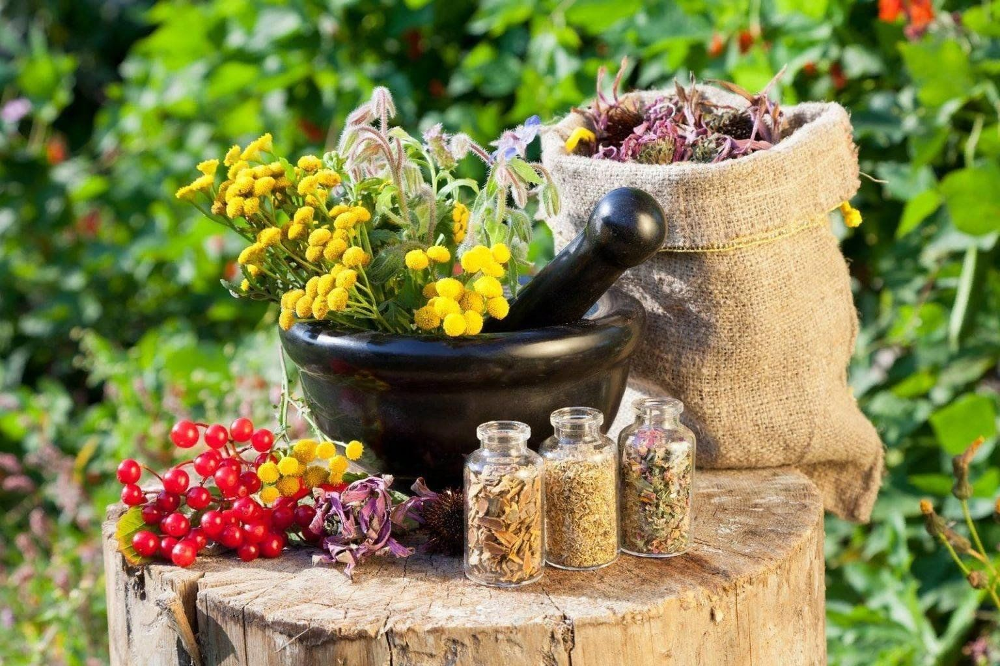

Лекарственные растения
Лекарственные растения представляют собой важный компонент традиционной и современной медицины, использующейся для лечения различных заболеваний и поддержания здоровья человека. Многие из них обладают уникальными химическими соединениями, которые помогают в борьбе с болезнями, снимают воспаление и ускоряют процессы заживления. На протяжении тысячелетий люди использовали травы и растения, чтобы облегчить симптомы, повысить иммунитет и улучшить общее состояние здоровья. Современные научные исследования подтверждают эффективность многих из этих растений, что приводит к их широкому применению в фитотерапии и натуральной медицине.
Преимущества лекарственных растений заключаются не только в их способности лечить, но и в их низкой токсичности по сравнению с синтетическими лекарственными средствами. Чаще всего препараты на основе натуральных экстрактов обладают меньшим количеством побочных эффектов и могут использоваться в качестве профилактических мер. К тому же, многие лекарственные растения являются доступными и легко выращиваются в домашних условиях, что позволяет людям сотрудничать с природой и использовать ее ресурсы для поддержания здоровья. Например, травы, такие как мята, мелисса и ромашка, могут применяться для повышения тонуса и успокоения.
Среди популярных лекарственных растений можно выделить такие виды как эхинацея, известная своим иммуностимулирующим действием, и шалфей, который активно используется для лечения воспалительных процессов и простуд. Алоэ вера, как уже упоминалось, используется для заживления кожи и лечения ожогов. Другие известные примеры включают имбирь, который может помочь при расстройствах пищеварения, и лаванда, обладающая успокаивающими свойствами. Эти растения не только способствуют улучшению здоровья, но и представляют собой важный аспект культурного наследия и народной медицины во многих странах.